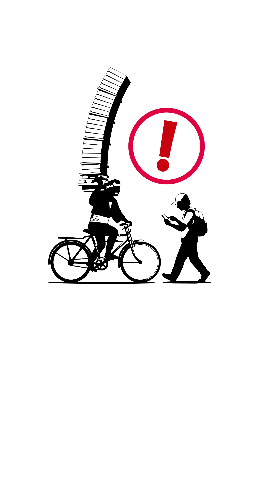

このアプリは探索の補助を目的としたツールです。 収録されているデータはスポットの適性や正確性を保証するものではありません。 周囲に注意して、安全を心掛けプレイしましょう。
1. 左上の「☰」ボタンから、見つけたい情報のレイヤーをONにしてください。
2. マップをズームし、画面下の「周囲をスキャン」ボタンを押すと、その範囲のデータが出現します。
3. アイコンをタップすると、その場所の名前が表示されます。
※上級者ルートや飲食店を利用する際は、周囲の安全や最新の営業状況にご注意ください。